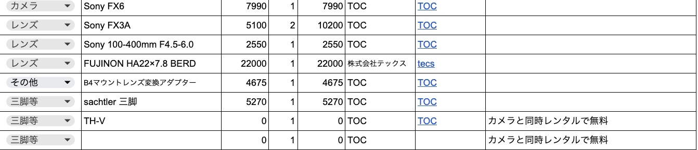
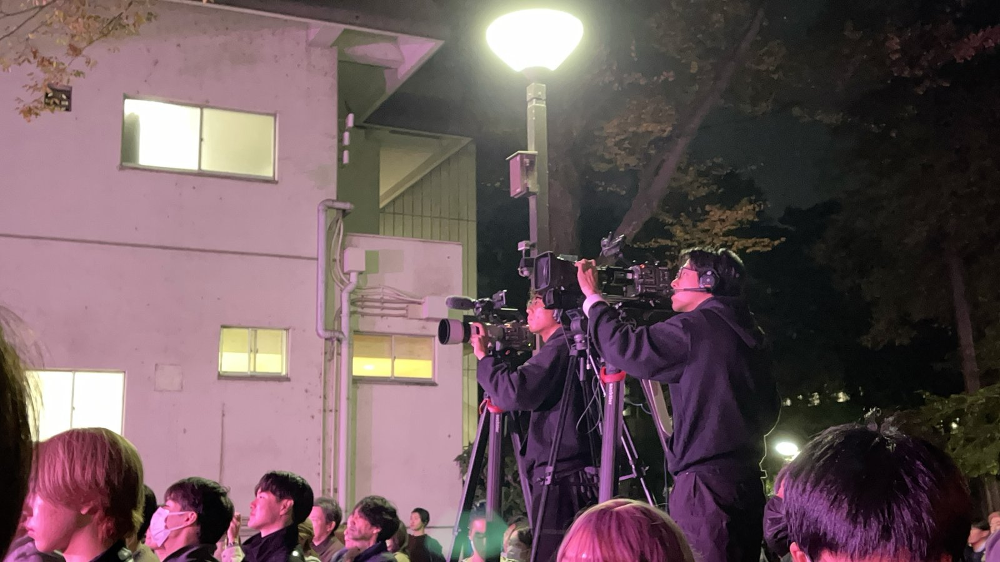
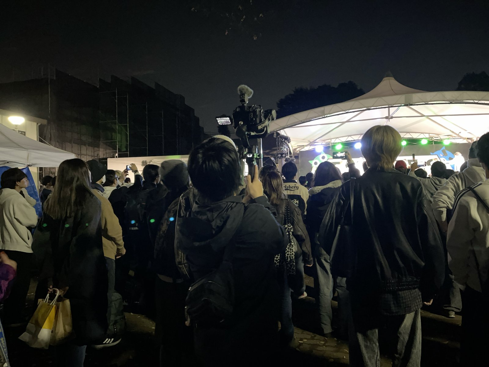
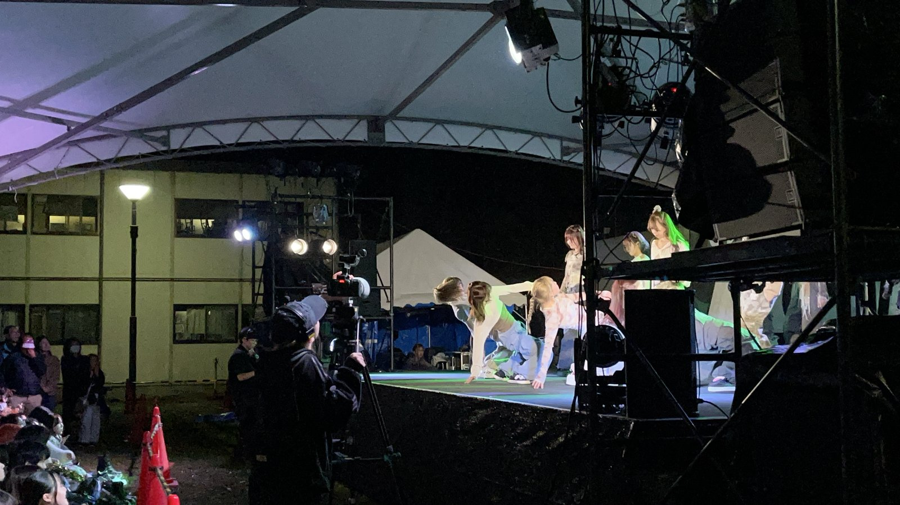
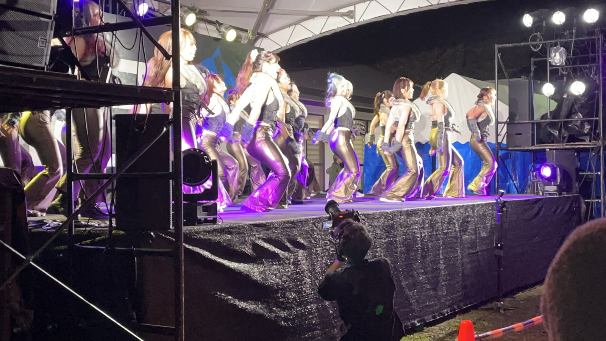

2025年度農工祭 rough公演
2025年11月15日、東京農工大学の学祭「農工祭」。公認ストリートダンスサークル「rough」のステージ公演を、撮影チームを率いて記録しました。定点を含む7カメ・5人体制。機材費の交渉から、当日の撮影ディレクション、2か月にわたる7カメ編集とカラーグレーディングまで——撮る前から納品まで、全体を統括した一本です。

撮影チームを、率いる
この公演では、撮影チームのリーダーを務めました。クルーは高校時代の部活のつながりから声をかけて集め、私を含めて5人。定点カメラを含む7カメ体制で、1時間を超えるステージ公演に臨みました。単に「自分が撮る」のではなく、誰がどの画を担当し、どこを必ず押さえるか——チーム全体の絵づくりを設計する立場です。
機材費を、プレゼンで交渉する
人件費はボランティア、機材費は rough に出してもらう前提で、サークル幹部と交渉しました。ただ予算を求めるのではなく、「機材費が変わると映像がどのくらい変わるか」をプレゼンしながら、コストと映像クオリティのバランスを一緒に詰めていく進め方です。実際に使用する機材のレンタル費用や借り先をまとめた機材リストを用意し、それを幹部に見せながら交渉しました。
もらった予算で足りない部分は自腹を切りました。それでも良いものにしたい——映像にかける熱量は、そこに出ていると思います。

実際に使った機材リストの一部。レンタル費用や借り先をまとめ、rough 幹部との交渉に使いました。（タップで拡大）
50分で、7カメを立てる
機材は公演前日からレンタルし、rough の前日リハーサルに合わせて、こちらも機材チェックとリハを実施。カメラマンの動きと機材の動線を事前に細かく組み、当日は大学の友人や rough メンバーにも搬入を手伝ってもらいました。前のステージプログラムが終わってから rough の公演が始まるまで、セッティングに使える時間はわずか50分。その中で7カメを立てきり、冒頭からしっかり撮影に入ることができました。
私自身はセンター後方の FX6 に B4レンズを付けたカメラで、ステージ上の「寄り」を担当。事前にもらった練習映像や前日リハの映像を何度も見返してすべてのショーケースの流れを暗記し、シミュレートしておいた“いちばんかっこいい画”を撮り続けました。自分のカメラだけでなく、各カメラマンに「ここだけは押さえてほしい」を事前ミーティングで共有したうえで、本番中も無線で指示を出しながら撮影を回しました。




本番の撮影チーム。定点の放送カメラからジンバルまで、複数の機材でステージを多角的に捉えました。（タップで拡大）
1時間44分を、2か月で仕上げる
撮影後から公開までの約2か月は、編集に充てました。約1時間44分・17本のショーケースを、まず Premiere Pro で7カメのカット編集。かっこよさを意識しつつ、適度に引きの画を混ぜて「ステージで今なにが起きているか」が分かりやすくなるよう構成しています。そのうえで、Log撮影された素材を DaVinci Resolve でカラーグレーディングしました。
色編集は、撮影クルーのうち対応できるメンバーにも分担してもらい、素早い納品をめざしました。全17本のうち10本は自分で色を担当し、残りの7本も任せきりにはせず進捗を確認。納期に間に合わなさそうな分は別のメンバーに振り分けたり、自分で巻き取ったりして、1月8日に全ショーケースの納品を完了しました。目標にしていた「公演後2か月以内の納品」を、1週間前倒しで達成した形です。納品データは、rough の公式Instagramで1月17日より順次公開されていきました。
カラーグレーディングはそれまで Final Cut Pro で行っていましたが、この案件をきっかけに DaVinci Resolve を導入。初めてのソフトでしたが、このタイミングでしっかり習得しました。
音割れした本番音声を、立て直す
音声でも、現場でのリカバリーがありました。ステージ音響を担当するPAさんからLINE OUTをもらい、センター固定のFX3に入力していたのですが、その音がすべて音割れ（クリップ）してしまっていたのです。そこで、rough がPAさんに渡していた音源そのものを分けてもらい、映像の音として代わりに使うことにしました。
ただしこれは、PA側で音量バランスが整えられる前の素材。そのため自分で整音したうえで、カメラマイクで拾った観客の応援の声をミックスし、その場の臨場感を足していきました。トラブルをそのまま事故にせず、むしろライブ感のある音に仕立て直す——撮ったものを最高の形にする意識で、後処理まで向き合いました。
3年生にとっての、最後の公演
この公演は、3年生にとって最後の舞台でした。この本編（YouTube版）は、ダンスパート（Instagram公開分と同じ）に加えてMCの映像なども入れ、公演をまるごと1本にまとめた rough メンバー向けのバージョンです。最後の公演という思い出を、最高の形で残せるように編集しました。
- 公開
- 2026年1月17日より順次（rough 公式Instagram）
- イベント
- 2025年11月15日／東京農工大学「農工祭」（rough 公演）
- 担当
- 撮影ディレクション・カメラ・編集（チームを統括）
- 体制
- 撮影クルー5人／7カメ（定点含む）
- カメラ（自分）
- Sony FX6 ＋ B4レンズ（センター後方・寄り担当）
- 編集
- Premiere Pro（7カメ カット編集）→ DaVinci Resolve（カラーグレーディング／本作で習得）
- 規模
- 17ショーケース・約1時間44分
- 納品
- 公演後2か月以内の目標を1週間前倒しで達成（1月8日完了）